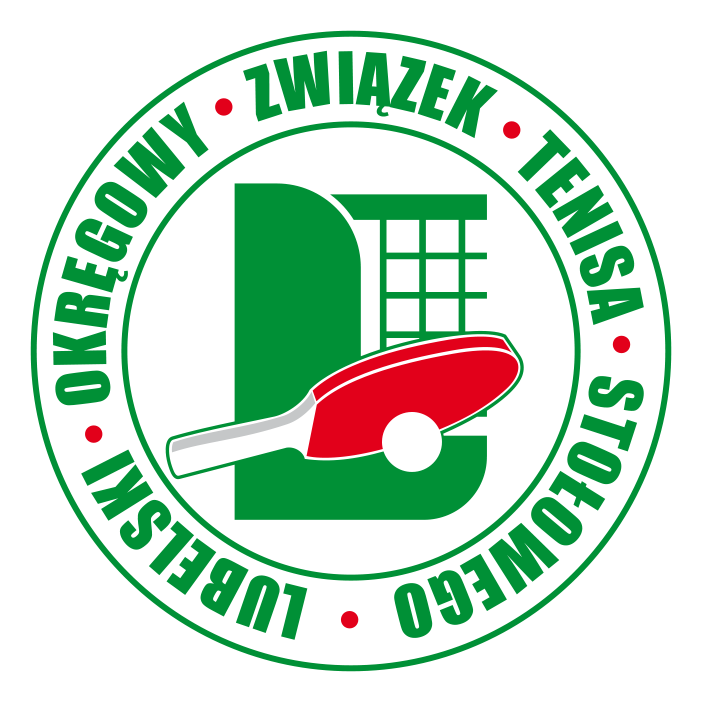

Lubelski Okręgowy Związek Tenisa Stołowego
Aktualności
Informacje
Komunikaty
Zarząd
Nasze sukcesy
Wojewódzkie związki
Strona archiwalna
Rozgrywki
Kalendarz
Indywidualne
Skrzaci
Żacy
Młodzicy
Kadeci
Juniorzy
Seniorzy
Drużynowe
II Liga Mężczyzn
II Liga Kobiet
III Liga Mężczyzn
III Liga Kobiet
IV Liga Mężczyzn
Kontakt
II Liga Kobiet
II Liga Mężczyzn
III Liga Kobiet
III Liga Mężczyzn
IV Liga Mężczyzn
ROZGRYWKI II LIGI MĘŻCZYZN
SEZON SPORTOWY 2020/2021
Miejsce
KLUB
Ilość meczy
Punkty
Gry+
Gry-
1
ATS AKANZA UMCS Lublin
9
16
75
15
2
KS CKFiS I Bełżyce
0
0
0
0
2
SMS I Włodawa
0
0
0
0
2
MKS STS I Lubartów
0
0
0
0
2
KS Ogniwo Chełm
0
0
0
0
1 - KOLEJKA - 04.10.2020 r.
Gospodarze - Goście
Wynik
KS Ogniwo Chełm : KSGCH Kłos Chełm
3 : 7
UKS Wola Osowińska : MKS STS I Lubartów
4 : 6
SMS I Włodawa : SMS II Włodawa
4 : 6
KS Sygnał LALAK Lublin : UKS Żaczek I Fajsławice
4 : 6
Koniec tabeli